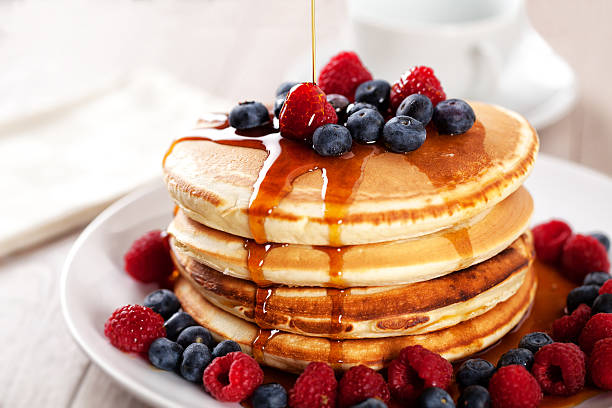

Home Page
Pancakes

Description
These seriously fudgy homemade brownies are quite possibly the richest, most decadent brownies you’ll ever try. They’re thick, dense, and supremely chocolatey, thanks to a triple dose of chocolate: cocoa powder, melted chocolate, and chocolate chips. They’re basically one step away from pure fudge!
Ingredients
- Unsalted Butter 3/4 Cup
- Semi-sweet Chocolate 113g
- Granulated Sugar 333g
- Eggs (at room temperature) 3
- Pure Vanilla Extract 2 tsp
- Unsweetened Dutch-Processed Cocoa Powder 1Cup
- All-purpose Flour 1 Cup
- Salt 3/4 tsp
- Semi-sweet Chocolate Chips 1 Cup
Steps
- Preheat the oven to 350°F (177°C) and line a 9-inch square metal baking pan with parchment paper, leaving an overhang on two opposite sides to lift out the finished brownies (makes cutting easier!). Set aside.
- In a small microwave-safe bowl or liquid measuring cup, combine the butter and half (2oz/56g) of the chopped chocolate. Melt in 30-second increments, stirring after each, until completely melted and smooth. Set aside to slightly cool while you continue.
- In a large bowl with a handheld or stand mixer fitted with a whisk attachment, combine the sugar and eggs. Beat on medium-high speed until the sugar is dissolved and the mixture is pale and ribbon-y, about 3 minutes.
- Pour the warm melted butter/chocolate into the bowl with the sugar/eggs, add the vanilla, and beat or whisk to combine.
- With a fine mesh sieve, sift the cocoa powder and flour into the batter, add the salt, then whisk or beat on low speed to incorporate. Fold in the remaining 2 ounces/57g chopped chocolate and the chocolate chips. The batter will be very thick. Spread it evenly into the prepared pan.
- Bake for 28–30 minutes, then test the brownies with a toothpick. Insert the toothpick into the center of the pan. If it comes out coated with wet batter, the brownies are not done. If there are only a few moist crumbs, the brownies are done. Keep checking every 2 minutes until you have moist crumbs. Brownies typically take 30–32 minutes in my oven. Err on the side of under-baking, as the brownies will continue to set as they cool.
- Remove from the oven and place on a cooling rack to cool completely in the pan. When cool, lift the brownies out by gripping the parchment overhangs and transfer to a cutting board. Use a sharp knife to cut into squares.
- Cover and store leftover brownies at room temperature for up to 1 week.